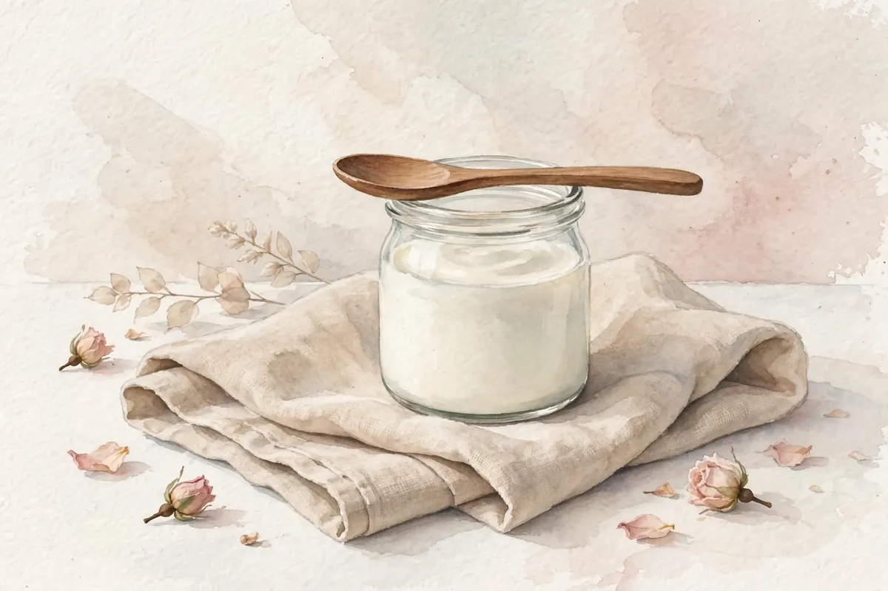

トップ ＞ インナーケア・サプリ ＞ 乳酸菌・発酵系サプリの菌数表示の読み方
乳酸菌・発酵系サプリの菌数表示の読み方

乳酸菌やビフィズス菌、発酵食品を由来とするサプリのパッケージには、「○億個」といった菌数の数字が大きく書かれていることがあります。数字が大きいほどよさそうに見えますが、その数字が何を数えたものなのか、表示の読み方を知っておくと、比べ方が変わります。この記事では、乳酸菌・発酵系サプリの菌数表示の読み方と、原材料名の欄から確認する順番を整理します。食品としての表示を読む案内であり、体への働きを約束するものではありません。
「○億個」は何を数えた数字か
菌数の表示でまず確認したいのは、その数字が何を数えたものかです。1日の目安量あたりの数なのか、1粒あたりの数なのか、1袋あたりの数なのかで、意味が変わります。パッケージの「1日○粒」や「1日○包」といった目安量の表示と、菌数の表示を並べて読むと、数字の単位が分かります。単位が書かれていない場合は、販売者の相談窓口などで確認するのが確実です。
次に、その数字がいつ数えられたものか、という点もあります。「製造時」の数として表示されているものと、賞味期限までを保証する数として表示されているものでは、意味が違います。菌は時間とともに減ることがあるため、表示の注釈に「製造時」や「賞味期限内」といった言葉があるかどうかを確認してください。注釈の書き方は商品によって違うので、細かい字の部分まで読むことが大切です。
菌の数え方にも種類があります。生きている菌を数えたものと、加熱などで死んだ菌も含めて数えたものでは、表示の意味が違います。パッケージに「生菌」や「死菌」といった言葉がある場合は、その区別が表示されています。どちらの表示がよいということではなく、自分の知りたい情報がどちらかを確認してから読む、という考え方です。
菌の名前と種類の表示を読む
菌数の次に見るのは、菌の名前です。原材料名の欄には、「乳酸菌」や「ビフィズス菌」といった大まかな名前のほか、菌株名と呼ばれる細かい名前が書かれていることがあります。菌株名は、菌の種類を特定するための名前です。同じ「乳酸菌」でも、菌株が違えば別の菌として扱われます。名前の細かさは、表示の丁寧さの目安のひとつになります。
発酵系のサプリでは、菌そのものではなく、発酵させたものの表示が中心になることがあります。たとえば、穀物や豆を発酵させたものが原材料名の欄に並び、菌の名前が前に出ていない場合があります。その場合は、発酵の原料と、発酵に関わった菌の名前が別々に書かれているかを確認します。原材料名は、多く使われているものから順に並ぶ決まりがあるので、並び順も一緒に読むと、全体の構成が分かります。
「乳酸菌入り」や「発酵」といった言葉が商品名やキャッチコピーにある場合でも、原材料名の欄にその菌や発酵物が書かれているかどうかを確認してください。商品名の印象と、原材料名の内容が一致しているかどうかを見る、というのが表示を読む基本の姿勢です。
続け方を確認するポイント
乳酸菌・発酵系のサプリを続けるときは、保管方法の表示も確認します。常温でよいものと、冷蔵が求められるものがあります。冷蔵の表示があるものは、開封後の保管場所も含めて、表示通りに保管してください。賞味期限の表示と、開封後の目安が別に書かれている場合は、両方を確認します。
飲むタイミングの表示も、商品によって違います。「食後」や「食前」といった案内があるものと、タイミングの指定がないものがあります。タイミングの指定がある場合は、その表示に従うのが基本です。指定がない場合は、自分の生活の中で飲み忘れにくい時間を決めて、続ける工夫をします。1日の目安量を守ることも、表示を読むうえでの基本です。目安量を超えて飲むことは、表示の範囲外の使い方になります。
薬を飲んでいる場合や、体調に不安がある場合は、サプリを始める前に医師や薬剤師に相談してください。サプリは食品であり、薬ではありません。体調の変化が気になる場合は、すぐに使用をやめて、専門家に相談してください。この記事は表示の読み方の案内であり、商品ごとに表示がある場合は、そちらが優先です。
セラフィナ「“億個”の数字は、1日分なのか1粒分なのか。単位を見るところから始めてみて」

セラフィナ｜美容の道具箱の案内役
「量と表示が分かれば、美容は失敗しない。」——セラフィナと白猫のモコが、買う前のチェックポイントを案内します。綺麗になりたい気持ちに正直に、でも表示は冷静に読むのが、このサイトの約束です。